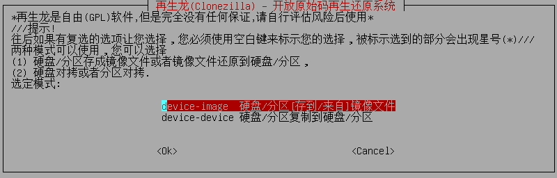
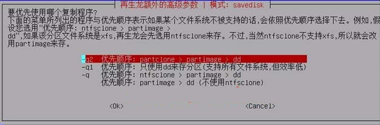
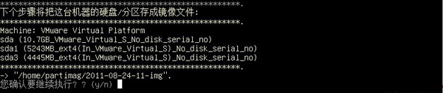
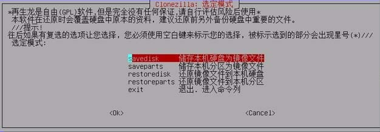

对于Windows操作系统，我们可以通过PE工具对其进行Ghost操作，在还原的时候通过镜像就可以还原到备份时的状态，一般的用途是批量对机器进行安装操作系统，另一个作用是个人不想对系统各种调试安装，在系统出问题之后直接进行还原操作。
对于Linux操作系统，WINPE对其没有作用，WINPE对Linux的文件系统Ext3及以上都不识别，所以没有办法对Linux系统进行备份，对于备份Linux操作系统，有很多软件可以选择，比如：Clonezilla、RedoBackup等
如果是对分区进行备份建议使用RedoBackup，带有非常好的UI界面，通过鼠标点击就能够完成分区的备份与还原。
如果是对硬盘进行备份，使用Clonezilla，但是在硬盘拷贝时，源盘要小于等于目标盘，否则拷贝将会出现异常。
步骤：
1、使用Clonezilla官方建议的启动盘制作软件，测试LinuxLive USB Creator可用，像其它常用的启动盘制作软件UltraISO制作的启动盘没有办法启动。
clonezilla-live-2.4.5-23-amd64.iso clonezilla-live-20160210-wily-amd64.iso 区别在于后者是 uEFI secure boot
制作启动盘过程：
安装LinuxLive USB Creator软件
插入U盘，打开软件
制作启动盘
选择U盘
选择克隆镜像clonezilla
Live Mode 不用操作
勾选Format the key
点击闪电标示，开始制作，直到出现Your LinuxLive Key is now up and ready!
2、克隆Linux系统
2.1 进入BIOS，选择U盘启动进入Clonezilla
2.2 选择语言
2.3 选择键盘映射布局

2.4 Clonezilla使用方式：图形化界面 | 命令行
2.5 选择镜像模式或者对拷
2.6 选择存储镜像的来源：如果是备份将备份的镜像存在哪里？如果是还原，还原的镜像在什么地方，我们通过U盘进行备份还原，所以选择使用本机的分区
2.7 系统提示插入U盘，如果没有插入U盘时，现在可插入存储系统的U盘

2.8 选择备份存储的U盘，本例以虚拟磁盘代替
2.9 选择存储路径，一般为顶级目录
2.10 显示分区挂载情况
2.11 选择模式：专家模式
2.12 备份分区或者硬盘
2.13 输入保存的镜像名称，默认即可
2.14 选择备份方式的优先顺序
2.15 备份高级选项，默认即可
2.16 镜像压缩格式，默认
2.17 选择分割档大小
2.18 是否检查镜像
2.19 复制完毕后的动作，默认
2.20 确认是否执行备份操作，输入y进入备份，等待……
2.21 提醒完成后需要关机
2.22 选择关机
3、恢复Linux系统
和备份的过程极为相似，在2.12步有不同，如果你选择的U盘中包含了备份镜像，那么将会多出两个可选项：
选择“还原镜像文件到本机硬盘”或者“还原镜像文件到本机分区”即可